COLOUR
PALETTE
The redesigned experience positions Menteiz Aviation around cargo solutions, with clearer service categories, quote initiation, shipment-related actions, credibility metrics, carrier relationships, routes, testimonials, FAQs, and contact conversion points.
2 audiences
one brand, two design languages
160 commits
more edits than additions
27 + 12 lanes
every arc on the globe is real
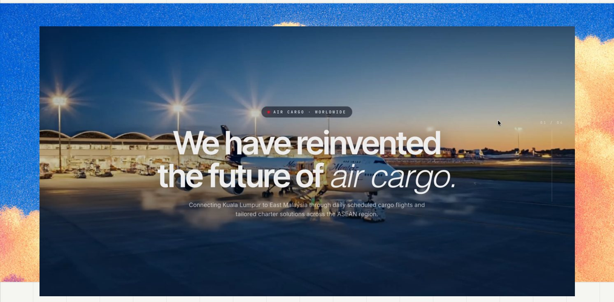
Menteiz Aviation Services is a nineteen-year-old air cargo agent in Kuala Lumpur — a GSA and CSA moving freight for 20+ carriers across 27 international and 12 domestic lanes, in everything from live animals to oilwell equipment.
The redesign had to do two jobs that pull in opposite directions: convince a freight forwarder who has never heard of Menteiz, and get out of the way of one who logs in every morning to raise quotes.
The existing website already communicated the company's offering, but the information architecture and presentation could make the experience more focused around user intent and conversion.
How do I make an aviation website look better?
How do I make a complicated business feel easy to navigate for a human?
Air freight is sold on credibility and run on paperwork. Menteiz had the credibility — nineteen years, IATA accreditation, dangerous-goods certification, a carrier list most agents would envy — and almost none of it was visible online. Meanwhile their customers were raising quotes over email and WhatsApp, then chasing status by phone.
So the project was really two products in one repository: a public site that has to win a forwarder's first meeting, and a logged-in workspace where that same forwarder raises, tracks and settles cargo quotes. Both had to feel like Menteiz. Neither could be designed like the other.
How might we make another aviation website look impressive?
How might we turn Menteiz’s credibility into a digital experience people can act on?
There aren't two user groups here so much as two states of one person. On day zero a forwarder is deciding whether Menteiz can be trusted with a pharmaceutical shipment. On day two hundred, that same forwarder wants eleven quotes raised before lunch. Designing one interface for both would have failed both.
A freight forwarder or shipper who has never dealt with Menteiz. Comparing three agents. Reading credentials, not features.
accent: brand red — used for emphasis
The same forwarder, now a customer, in the tool every working morning. Speed and status legibility beat everything.
accent: navy — red reserved for destructive actions
The logged-in product was re-themed off brand red onto navy. Red is a wonderful colour to be sold to and an exhausting one to work inside eight hours a day — and once red means "cancelled" and "rejected" in a status column, it can't also mean "primary button".
Once I understood the business, I gave myself three rules.
They became the filter for every design decision that followed.
A single set of tokens serves both halves — what changes is which one is allowed to be the primary. Navy carries the brand everywhere; red leads outside the login and retreats to status-and-danger inside it.
colour
type
Twenty-plus carriers
Grotesk display · tight, italic for emphasis
MONO · CODES, LANES & LABELS
status language
The hero uses motion to create attention; the content beneath it uses specificity to earn trust. A capability ticker immediately surfaces the eleven areas Menteiz actually handles — scheduled flights, GSA, CSA, perishables, dangerous goods, vulnerable goods, charter and more — giving users a clear sense of expertise before asking them to explore further.
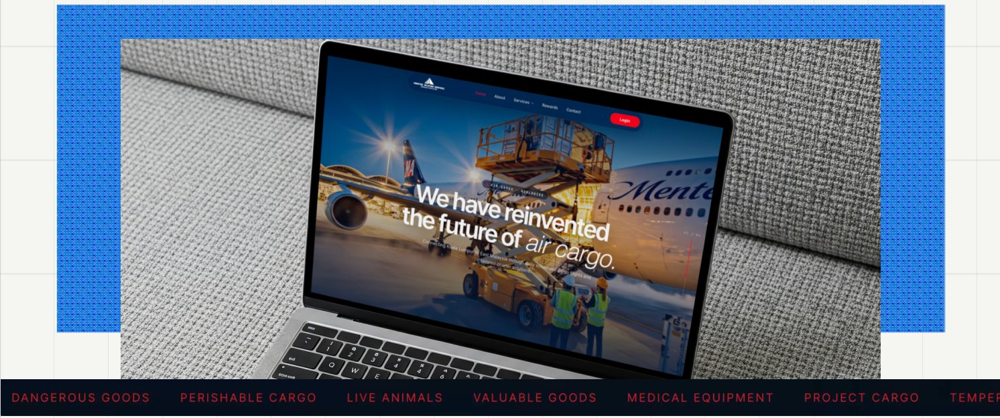
The homepage doesn't just tell you what Menteiz does. It lets you do it.
Most logistics websites make users hunt for the next step: find the right service, find the contact page, write an email, wait.
I pulled the three most likely actions into one place:
Get a Quick Quote · Track a Shipment · Check a Flight Schedule
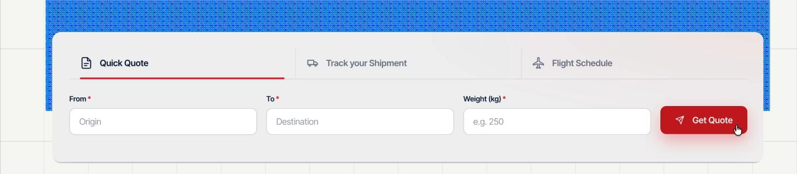
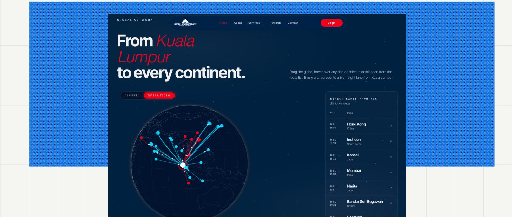
A draggable globe of 27 international and 12 domestic routes out of Kuala Lumpur, with a paired route list so the same information is available without touching the toy. Red arcs are charter, cyan scheduled — and it degrades to the list when WebGL isn't available.
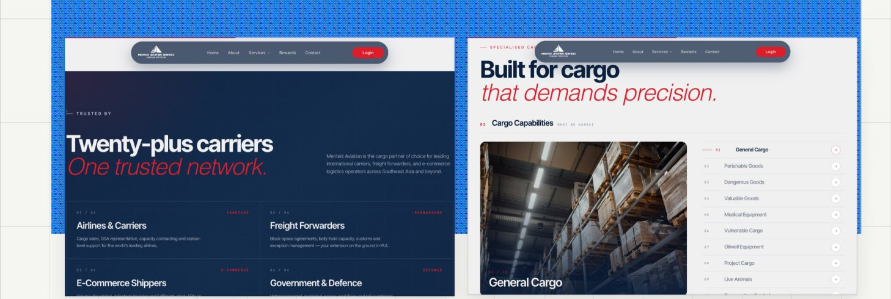
Four segments — airlines, forwarders, e-commerce, government & defence — each described in the buyer's own vocabulary.
Each with its own page, because a pharma shipper and an oilwell contractor share no vocabulary at all.
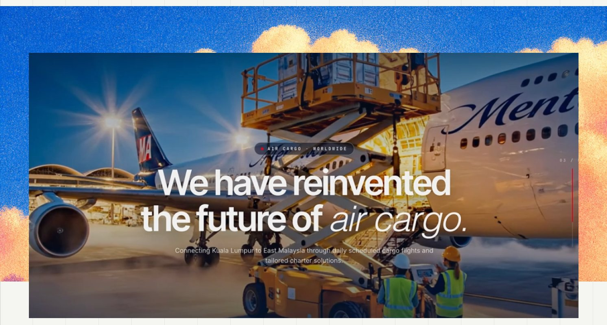
The public site is designed to build confidence. Behind the login, the goal changes: make the work effortless. The Cargo Quotes console brings every quote, its state and its next action into a single operational view.
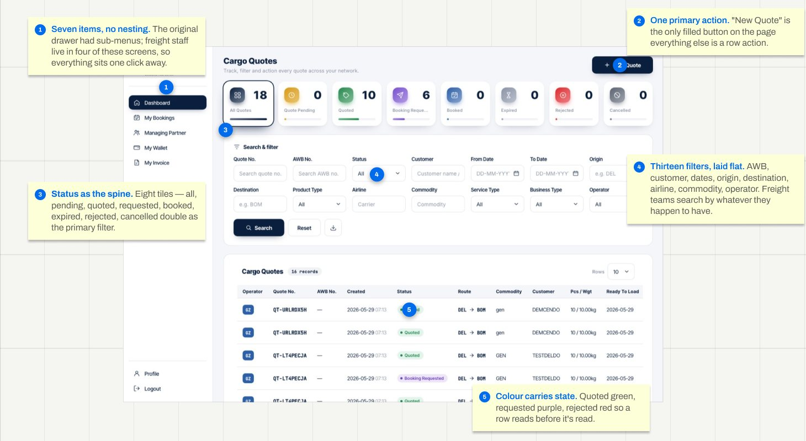
The original drawer had sub-menus; freight staff live in four of these screens, so everything sits one click away.
"New Quote" is the only filled button on the page — everything else is a row action.
Eight tiles — all, pending, quoted, requested, booked, expired, rejected, cancelled — double as the primary filter.
AWB, customer, dates, origin, destination, airline, commodity, operator. Freight teams search by whatever they happen to have.
Quoted green, requested purple, rejected red — so a row reads before it's read.
The core loop. A quote is raised, matched against live flights with rates and space, then batched into booking requests — a forwarder rarely wants one flight, they want the best three sent to the airline at once.
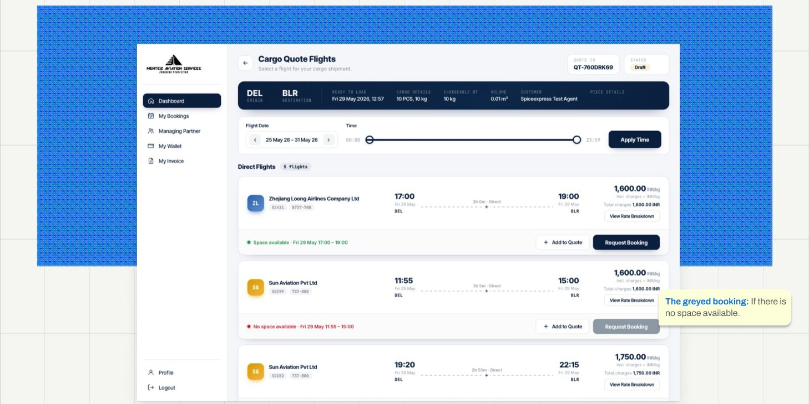
The shipment summary is pinned to the top in navy so the thing you're quoting for never leaves the screen. Each flight states its rate per kg and the total, because freight is quoted one way and approved the other. Where a flight has no space, the action is disabled rather than hidden — an operator needs to know the flight exists and is full.
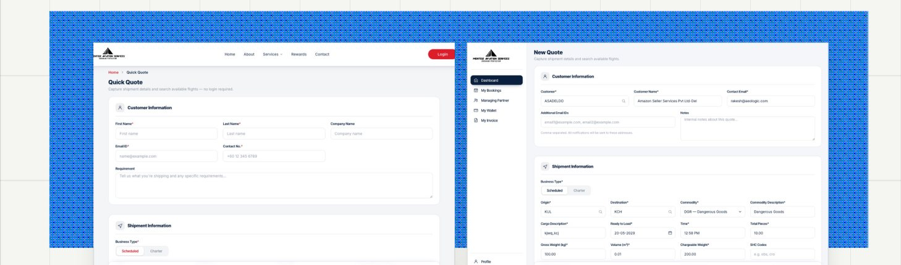
The whole point: a prospect can price a shipment before they trust you enough to create an account.
The same form, pre-filled from the account, with draft-saving for quotes that wait on customer detail.
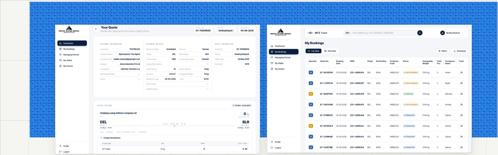
The document a forwarder forwards — readable by someone who never logs in.
Operator and Quote number were promoted to the first two columns — that's what staff search by.
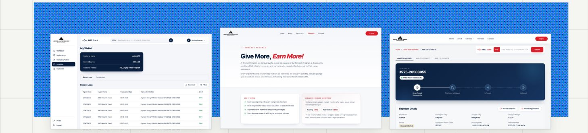
Balance and statement, with the top-up row removed once we learned settlement runs on credit terms.
A loyalty tier for repeat forwarders — the one page that replaced a nav item mid-project.
Public and logged-in, because the person chasing a shipment is often the consignee, not the customer.
This site was designed in code with Claude Code, which means the first draft of every screen arrived fast and looked finished. In a compliance industry that is exactly the risk. An AI will fill an accreditation card with something that reads like an accreditation, and it will look right to anyone who doesn't work in freight.
More commits changed or deleted existing work than created it. That ratio is the job.
the first answer
One brand, one accent: the logged-in product inherited the marketing site's red — red sidebar, red primary buttons, red everywhere.
what shipped
Navy primary inside the login. Red demoted to a status colour — rejected, cancelled, no space.
Consistency isn't sameness. A colour can't mean "go" and "this booking failed" on the same screen, and eight hours inside a red interface is genuinely tiring. The AI optimised for brand coherence; the work needed semantic clarity.
8 JunTheme logged-in dashboard with navy-blue primary instead of red
the first answer
A custom cursor across the whole site, plus a WebGL globe with no fallback and a hero carrying two competing CTAs.
what shipped
Native cursor everywhere, a globe that degrades to its route list, and a hero with no buttons at all.
Three separate versions of the same mistake: effects that impress a designer and cost a user. A custom cursor breaks every affordance people already have; an unguarded WebGL scene shows a corporate client a blank rectangle; two hero CTAs mean neither is the answer. Delete, guard, delete.
27 MayTheme logged-in dashboard with navy-blue primary instead of red
26 MayMake hero globe fail-safe when WebGL is unavailable
24 MayRemove the two hero CTAs from beat 1
plausible is not the same as true. that's the whole job now.